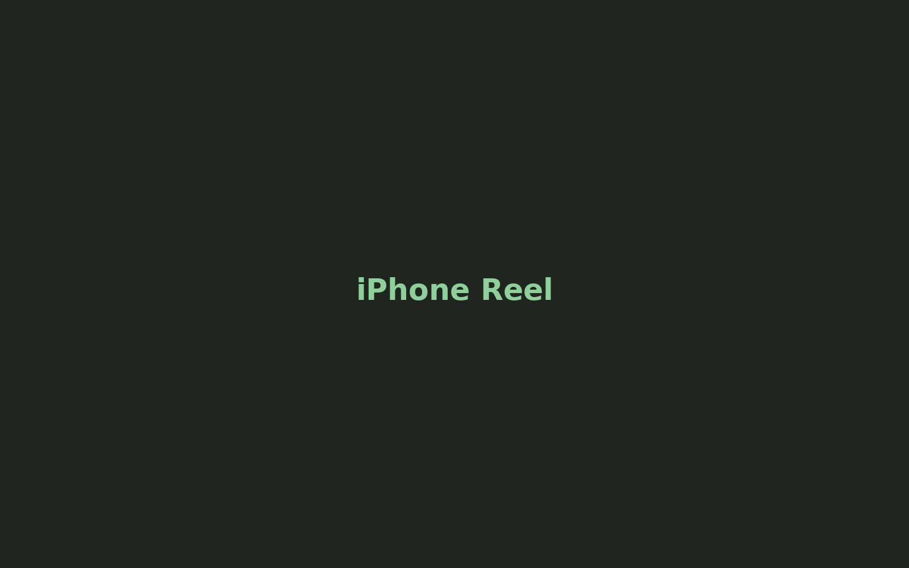

iPhone Footage Reel
Embed your newest reel here. This can be a YouTube/Vimeo iframe or a local video file.

Suggested runtime: 45–90 seconds. Keep it sharp, cinematic, and intentional.
Curated Stills
Top 20–25 images. Replace these placeholders with your final Lightroom web exports.